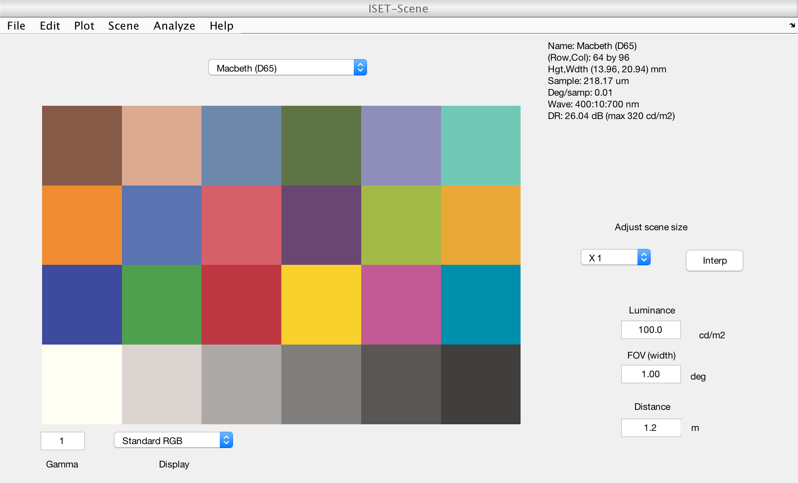
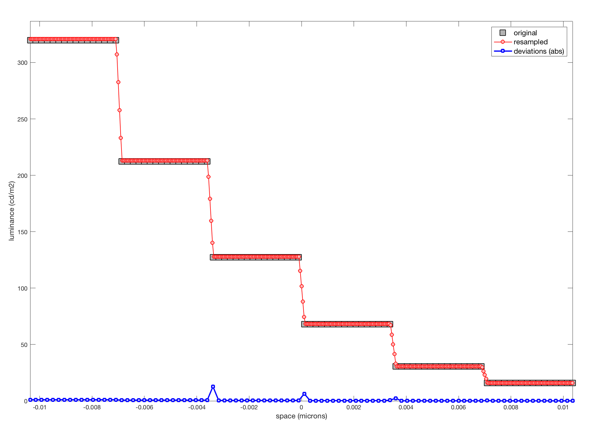
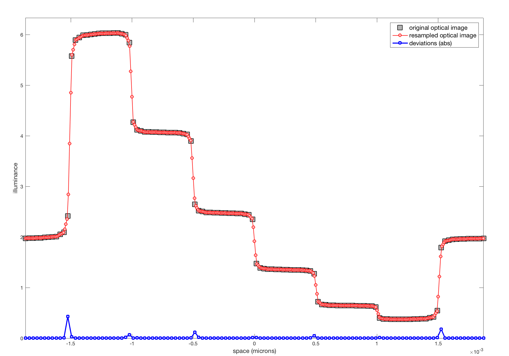

Contents
function varargout = v_sceneoiSpatialResample(varargin)
varargout = UnitTest.runValidationRun(@ValidationFunction, nargout, varargin);
end
function ValidationFunction(runTimeParams)
Initialize
ieInit;
Create a scene
scene = sceneCreate;
scene = sceneSet(scene,'fov',1);
if (runTimeParams.generatePlots)
vcAddAndSelectObject(scene); sceneWindow;
end
originalResolution = sceneGet(scene, 'spatial resolution', 'um');

Resample scene
dx = 50;
sceneResampled = sceneSpatialResample(scene,dx,'um');
resampledResolution = sceneGet(sceneResampled , 'spatial resolution', 'um');
Internal validation #1 - deviation in resolution
tolerance = 1E-4;
quantityOfInterest = max(abs(resampledResolution - dx*[1 1]));
UnitTest.assertIsZero(quantityOfInterest,'Resampled scene resolution - desired resolution',tolerance);
Internal validation #2 - deviation in luminance
[xPositionsOriginal, luminanceProfileOriginal] = getProfile(scene, 0.75, 'scene', 'luminance');
[xPositionsResampled, luminanceProfileResampled] = getProfile(sceneResampled, 0.75, 'scene', 'luminance');
luminanceDeviations = zeros(1,numel(xPositionsOriginal));
for k = 1:numel(xPositionsOriginal)
[~, ik] = min(abs(xPositionsResampled - xPositionsOriginal(k)));
luminanceDeviations(k) = abs(luminanceProfileOriginal(k) - luminanceProfileResampled(ik));
end
tolerance = 0.05;
quantityOfInterest = max(luminanceDeviations/max(max(sceneGet(scene, 'luminance'))));
UnitTest.assertIsZero(quantityOfInterest,'Resampled scene - original scene max normalized luminance deviation',tolerance);
UnitTest.validationData('scene', scene);
UnitTest.validationData('sceneResample', dx);
UnitTest.validationData('sceneLluminanceDeviations', luminanceDeviations);
if (runTimeParams.generatePlots)
h = figure(1);
set(h, 'Position', [10 10 1000 700]);
subplot('Position', [0.05 0.05 0.9 0.9]);
plot(xPositionsOriginal, luminanceProfileOriginal, 'ks', 'MarkerSize', 12, 'MarkerFaceColor', [0.7 0.7 0.7]);
hold on;
plot(xPositionsResampled, luminanceProfileResampled, 'ro-', 'MarkerSize', 6, 'MarkerFaceColor', [1.0 0.7 0.7], 'LineWidth', 1.0);
plot(xPositionsOriginal, luminanceDeviations, 'bs-', 'LineWidth', 2.0, 'MarkerFaceColor', [0.8 0.8 1.0]);
xLims = max([max(xPositionsOriginal) max(xPositionsResampled)])*[-1 1];
yLims = [0 max([max(luminanceProfileOriginal) 1.05*max(luminanceProfileResampled)])];
set(gca, 'XLim', xLims, 'YLim', yLims);
xlabel('space (microns)', 'FontSize', 12);
ylabel('luminance (cd/m2)', 'FontSize', 12);
hL = legend('original', 'resampled', 'deviations (abs)');
set(hL, 'FontSize', 12);
drawnow;
end

Create an oi with a larger spatial sample distance
scene = sceneCreate;
scene = sceneSet(scene,'fov',10);
oi = oiCreate;
oi = oiCompute(oi,scene);
Now sample at 10 um
dx = 10;
oiResampled = oiSpatialResample(oi,dx,'um');
resampledResolution = oiGet(oiResampled,'spatial resolution','um');
Internal validation #3 - deviation in resolution (optical image)
tolerance = 1E-3;
quantityOfInterest = max(abs(resampledResolution - dx*[1 1]));
UnitTest.assertIsZero(quantityOfInterest,'Resampled optical image - desired resolution',tolerance);
Internal validation #4 - deviation in luminance (optical image)
[xPositionsOriginal, illuminanceProfileOriginal] = getProfile(oi, 0.75, 'oi', 'illuminance');
[xPositionsResampled, illuminanceProfileResampled] = getProfile(oiResampled, 0.75, 'oi', 'illuminance');
illuminanceDeviations = zeros(1,numel(xPositionsOriginal));
for k = 1:numel(xPositionsOriginal)
[~, ik] = min(abs(xPositionsResampled - xPositionsOriginal(k)));
illuminanceDeviations(k) = abs(illuminanceProfileOriginal(k) - illuminanceProfileResampled(ik));
end
tolerance = 0.08;
quantityOfInterest = max(illuminanceDeviations/max(max(oiGet(oi, 'illuminance'))));
UnitTest.assertIsZero(quantityOfInterest,'Resampled scene - original scene max normalized illuminance deviation',tolerance);
UnitTest.validationData('scene10', scene);
UnitTest.validationData('oi10', oi);
UnitTest.validationData('oiResample', dx);
UnitTest.validationData('oiIlluminanceDeviations', illuminanceDeviations);
if (runTimeParams.generatePlots)
h = figure(2);
set(h, 'Position', [10 10 1000 700]);
subplot('Position', [0.05 0.05 0.9 0.9]);
plot(xPositionsOriginal, illuminanceProfileOriginal, 'ks', 'MarkerSize', 12, 'MarkerFaceColor', [0.7 0.7 0.7]);
hold on;
plot(xPositionsResampled, illuminanceProfileResampled, 'ro-', 'MarkerSize', 6, 'MarkerFaceColor', [1.0 0.7 0.7], 'LineWidth', 1.0);
plot(xPositionsOriginal, illuminanceDeviations,'bs-', 'LineWidth', 2.0, 'MarkerFaceColor', [0.8 0.8 1.0]);
xLims = max([max(xPositionsOriginal) max(xPositionsResampled)])*[-1 1];
yLims = [0 max([max(illuminanceProfileOriginal) 1.05*max(illuminanceProfileResampled)])];
set(gca, 'XLim', xLims, 'YLim', yLims);
xlabel('space (microns)', 'FontSize', 12);
ylabel('illuminance', 'FontSize', 12);
hL = legend('original optical image', 'resampled optical image', 'deviations (abs)');
set(hL, 'FontSize', 12);
drawnow
end
Will not round param 'oi10.optics.lens', which is of class type:'Lens'.

end
function [xPositions, profile] = getProfile(isetbioObject, f, objectType, mapType)
if (strcmp(objectType, 'scene'))
map = sceneGet(isetbioObject, mapType);
spatialSupport = sceneGet(isetbioObject, 'spatial support');
else
map = oiGet(isetbioObject, mapType);
spatialSupport = oiGet(isetbioObject, 'spatial support');
end
xPositions = spatialSupport(1,:,1);
yPositions = spatialSupport(:,1,2);
[~, targetRow] = min(abs(yPositions-f*max(yPositions)));
profile = squeeze(map(targetRow, :));
end